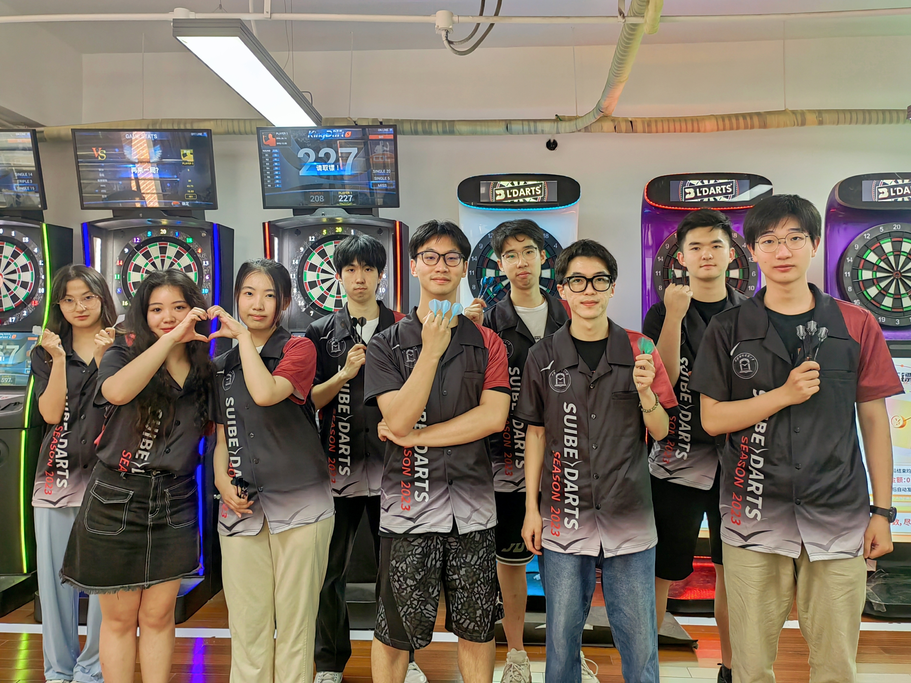
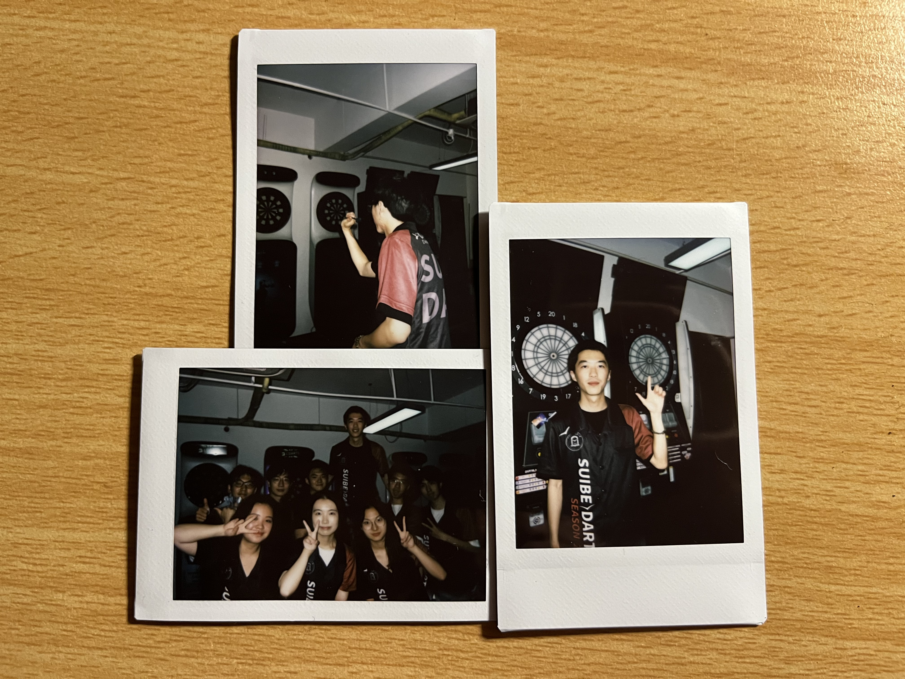
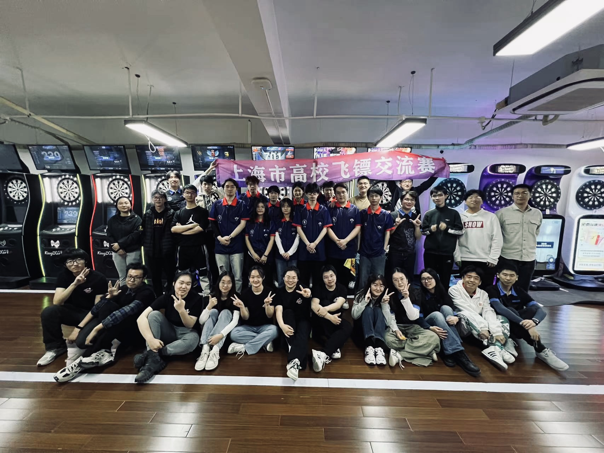
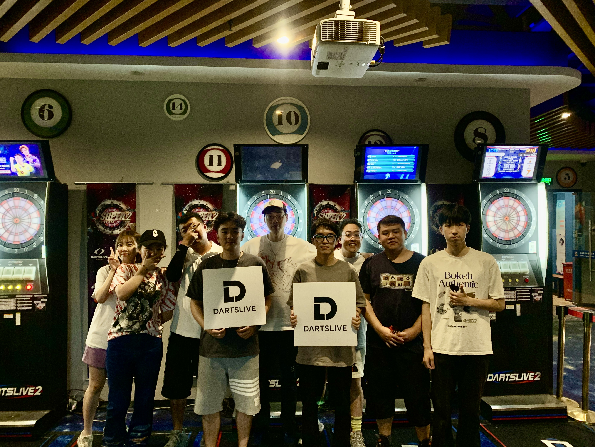
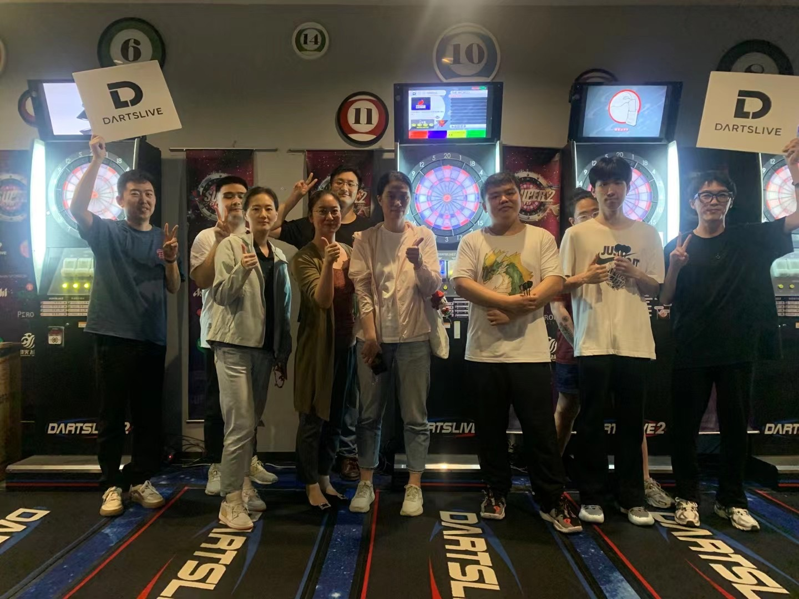
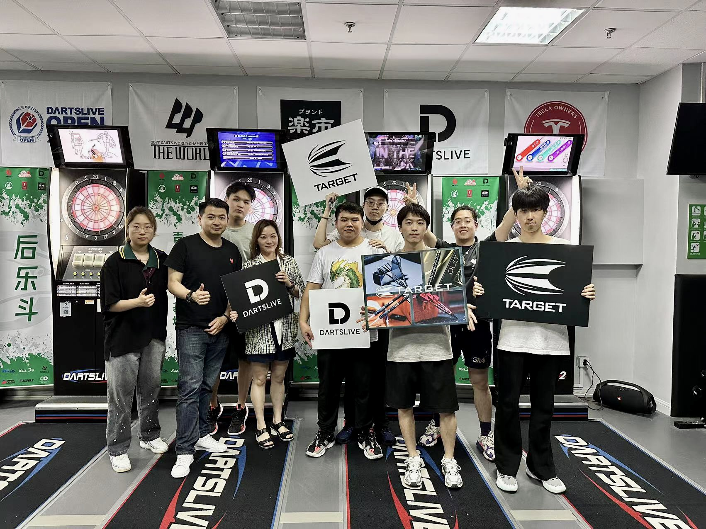
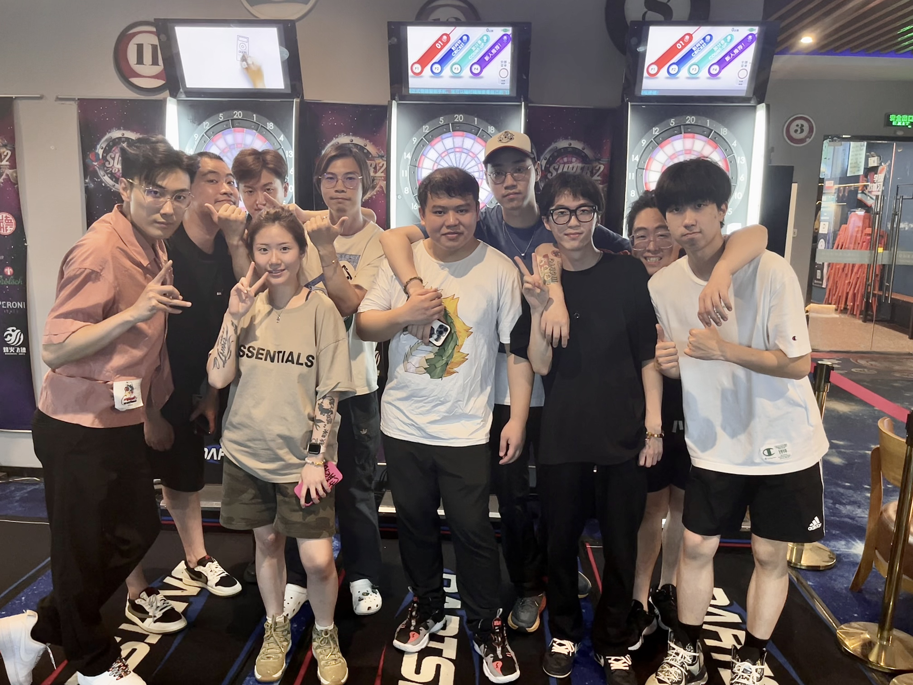
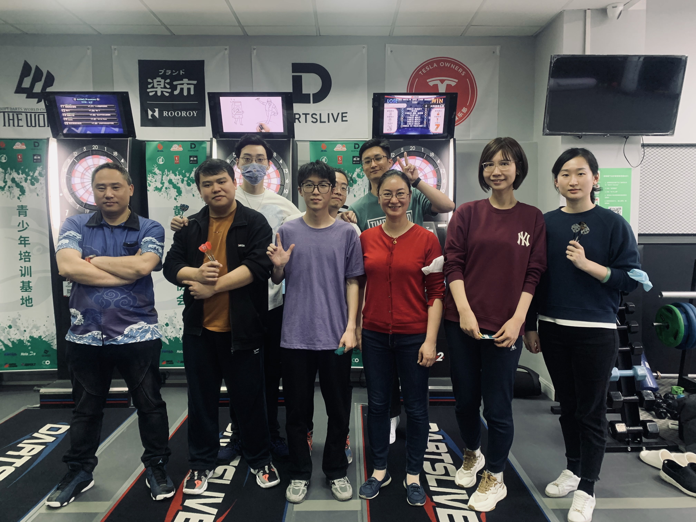

01 · 怎么开始的
抽签
我打飞镖，是意外。大一体育课选项目，想选射箭，没选上，被分到了飞镖。
前几节课就是完成课时要求，没想太多。然后慢慢就不一样了。
02 · 认真起来
刻意练习
开始自己留下来加练。找职业比赛的视频看，研究他们的站姿、握镖、出手方式，然后回到靶子前一点一点改。
让我着迷的是它的可重复性。每一次出手都可以复刻，每一个失误也都是你自己的问题，没有别的原因。
每一次出手都可以复刻，每一个失误都是你自己的。
03 · 接手
名存实亡的社团
上经贸大飞镖社 2019 年曾是全国排名靠前的社团。然后疫情来了，社团停摆了两年，等到重新开放的时候，架构基本上已经散了。
我就这么接了主席的位置。
我接手的与其说是一个组织，不如说是一个组织的壳子——五十来号人，参与程度各不一样，没有正式的校队，也没有任何赛事安排。我做的第一件事是重新搭架构：建了赛事部和宣传部，让专门的人去管比赛，专门的人去搞招募，分开来做。
04 · 建设
从五十人到将近一百人
两年内社团从五十来人扩到了将近一百人。校队也从零重建起来——有正式的选拔，有固定训练，有参加比赛的真正阵容。
我还想让我们出现在赛场上的时候像个有来头的队伍。所以自己设计了队服：黑底，红白配色，正面印"SUIBE DARTS"，男女款都有。



穿着队服的团队 · 左右滑动查看 →

上经贸大飞镖俱乐部 · 全员合照
05 · 比赛
上海高校飞镖联赛
记得最清楚的一场比赛是上海高校飞镖交流赛，在华政举办的，多所高校参加，有个人赛也有团体赛。
我个人赛拿了第一。团队第三。
我一直都有个问题——到了结镖环节会特别紧张，手会收紧，节奏变慢。那场比赛我也紧张。还是投了。结果没出问题。

上海市高校飞镖交流赛
06 · 校园以外
试着成为真正的高手
Dartslive 是一个全球飞镖机联网系统，有玩家卡、排名和自己组织的比赛。我注册了一张卡，开始参加上海的 Dartslive 赛事。
那里的对手完全是另一个级别——打了好多年的老手，结镖速度快很多，稳定性也强很多。我大多数比赛第一轮就出局了，偶尔能打到第二轮。
其实不太在意。真正让我喜欢的是：比完赛凌晨跑去附近吃碗面，和刚才打完的对手坐在一起聊天。或者是华政那个场地的夜场——机器多、灯光好，甚至有人搬了一张折叠床过去，因为我们经常打到晚上十一点还没停。
因为飞镖认识的那些来自不同学校的朋友、上海各个俱乐部的管理层——这些都是飞镖直接带来的。没有飞镖，大学会小很多。






Dartslive 赛事 — 大多数都打到很晚 · 左右滑动 →

重要的是比赛之后那部分


07 · 传承
找到下一任主席
离开之前，我要找接班人。我想找的是真的喜欢打的人，不是只想要那个头衔的。
找到了一个技术很扎实的学弟，从高中开始就在认真打，人也很好，跟人相处没有问题。我们一起参加了比赛，一起训练，在同一个场地待了足够多的时间，到最后感觉像是真正的传承，而不是走个行政流程。
离开的时候，我知道社团不会出问题。